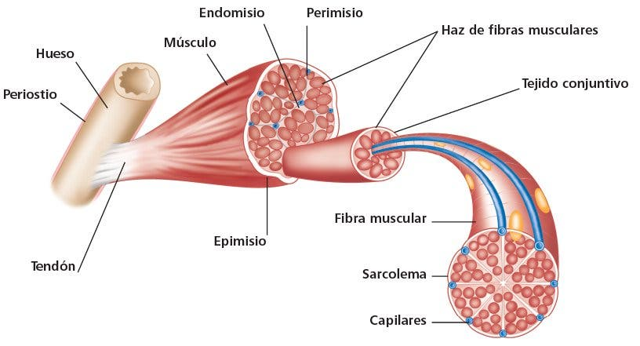
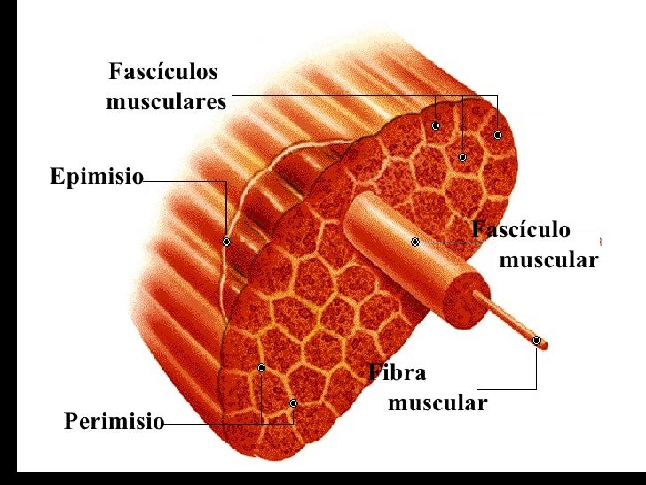

Anatomía muscular
Estructura general
Un músculo está compuesto de varias capas organizadas jerárquicamente, desde las fibras musculares individuales hasta el músculo completo.

Capas del músculo

Fibras musculares
Células musculares individuales que son las unidades básicas.

Fascículos
Grupos de fibras musculares rodeadas por tejido conectivo.
Músculo completo
El conjunto completo rodeado por tejido conectivo.
Tejido conectivo
| Capa | Descripción | Función |
|---|---|---|
| Endomisio | Rodea cada fibra muscular | Protección individual de fibras |
| Perimisio | Rodea cada fascículo | Organización de grupos de fibras |
| Epimisio | Rodea todo el músculo | Protección general del músculo |
Proteínas principales
-
Actina (filamento delgado)
Proteína que forma los filamentos delgados del sarcómero.
-
Miosina (filamento grueso)
Proteína motora responsable de la contracción muscular.